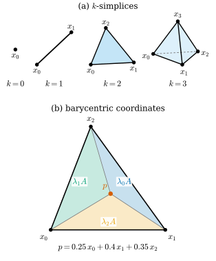
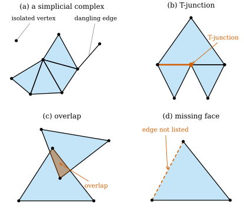
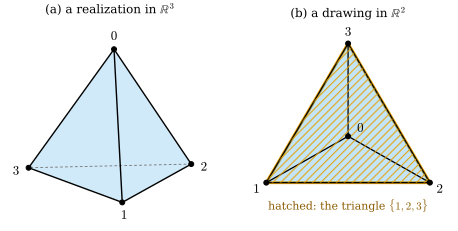

33.1 Simplices and Simplicial Complexes
Goals
- affinely independent인 점들의 convex hull로 \(k\)-simplex를 정의하고, simplex의 점을 barycentric coordinates로 쓸 수 있다.
- geometric simplicial complex의 두 조건을 확인하고, T-junction이나 겹친 triangle이 왜 조건을 깨는지 설명할 수 있다.
- abstract simplicial complex를 “부분집합을 취하는 연산에 닫힌 유한 집합족”으로 이해하고, 그것을 언제나 \(\R^{n_0}\) 안에 geometric realization으로 되살릴 수 있음을 증명할 수 있다.
- face list에서 complex를 만들고 그 조건을 검사하는 코드를 쓸 수 있다.
Prerequisites
- Definition 1.1.9: linearly independent
- Chapter 32의 개요: discrete curve(vertex를 차례로 이은 polygon)와 “smooth 정의 하나에 discrete 정의가 여럿”이라는 Track 2의 주제
- (읽었다면) Definition 31.1.1: triangle mesh를 vertex 위치와 face 목록으로 본 Track 1의 서술
Motivation
Chapter 32에서는 vertex를 차례로 이은 polygon, 곧 discrete curve 위에서 curvature를 정의했다. polygon의 연결 정보는 단순하다. vertex \(i\)의 이웃은 \(i - 1\)과 \(i + 1\)뿐이고, 이 사실은 번호를 매기는 방식에 이미 들어 있다. surface로 가면 사정이 달라진다. triangle mesh의 한 vertex에는 triangle이 몇 개든 모일 수 있고, 어떤 triangle이 어떤 edge를 공유하는지가 모양의 topology를 정한다. 같은 수의 vertex로 sphere 모양도 torus 모양도 만들 수 있고, 둘을 가르는 것은 좌표가 아니라 연결이다.
Definition 31.1.1은 triangle mesh를 vertex 위치와 face 목록의 짝으로 보았다. 이 장은 그중 face 목록, 곧 연결 정보만 따로 떼어 다룬다. 질문은 둘이다.
- 좌표 없이 연결만으로 모양의 뼈대를 기술하는 대상은 무엇인가? (이 절과 Section 33.2)
- 그 대상은 언제 surface인가? (Section 33.4)
첫 질문의 답이 simplicial complex다. 이 절은 먼저 \(\R^n\) 안의 기하적 대상인 simplex와 geometric simplicial complex를 정의한다. 그다음 좌표를 지워 abstract simplicial complex를 얻고, 지운 좌표를 언제든 되살릴 수 있음을 보인다.
Convex Hulls and Affine Independence
simplex는 “가장 단순한 convex 조각”이다. 집합 \(C \subseteq \R^n\)의 두 점 \(p, q\)를 잇는 선분 \(\{(1 - t)p + tq : 0 \le t \le 1\}\)이 언제나 \(C\)에 들어 있으면 \(C\)를 convex set(볼록집합)이라 한다. disk와 삼각형 안쪽은 convex set이고, annulus는 안쪽 구멍을 건너는 선분이 있으므로 convex set이 아니다. 점 \(x_0, \dots, x_k \in \R^n\)에 대하여
를 이 점들의 convex hull(볼록 껍질)이라 하고, 합 \(\sum_i \lambda_i x_i\)(\(\lambda_i \ge 0\), \(\sum_i\lambda_i = 1\))를 convex combination(볼록결합)이라 한다. 두 점의 convex hull은 선분이고, 세 점의 convex hull은 보통 삼각형이다. “보통”이라고 한 이유는 세 점이 한 직선 위에 있으면 convex hull이 선분으로 납작해지기 때문이다. 이런 납작해짐을 막는 조건이 다음이다.
Definition 33.1.1 (affinely independent). 점 \(x_0, x_1, \dots, x_k \in \R^n\)에 대하여 벡터 \(x_1 - x_0, \dots, x_k - x_0\)이 linearly independent(Definition 1.1.9)이면 이 점들이 affinely independent(아핀 독립)라 한다. 그렇지 않으면 affinely dependent라 한다.
정의는 \(x_0\)을 기준점으로 골랐다. 다음 lemma는 이 선택이 결과에 영향을 주지 않음을 보인다.
Lemma 33.1.2 (affine independence without a base point). \(x_0, \dots, x_k \in \R^n\)이 affinely independent일 필요충분조건은 다음이다: 실수 \(\mu_0, \dots, \mu_k\)가
을 만족하면 \(\mu_0 = \cdots = \mu_k = 0\)이다. 따라서 affine independence는 어느 점을 기준점으로 고르든 같고, 점들의 순서에도 무관하다.
Proof idea: \(\sum\mu_i = 0\)이면 \(\sum_i \mu_i x_i = \sum_{i \ge 1}\mu_i(x_i - x_0)\)이다. 이 식 하나로 두 조건이 서로 옮겨 간다.
Proof. \(\sum_i \mu_i = 0\)이면 \(\mu_0 = -\sum_{i\ge1}\mu_i\)이므로
\[ \sum_{i=0}^{k}\mu_i x_i = \sum_{i=1}^{k}\mu_i x_i - \Bigl(\sum_{i=1}^{k}\mu_i\Bigr)x_0 = \sum_{i=1}^{k}\mu_i (x_i - x_0) \]이다. (\(\Rightarrow\)) \(x_1 - x_0, \dots, x_k - x_0\)이 linearly independent이고 (33.1.2)가 성립하면, 위 식이 \(0\)이므로 \(\mu_1 = \cdots = \mu_k = 0\)이고, 그러면 \(\mu_0 = -\sum_{i \ge 1}\mu_i = 0\)이다. (\(\Leftarrow\)) \(\sum_{i\ge1} c_i(x_i - x_0) = 0\)이라 하자. \(\mu_i = c_i\) (\(i \ge 1\)), \(\mu_0 = -\sum_{i\ge1}c_i\)로 두면 \(\sum_i\mu_i = 0\)이고 위 식에 의해 \(\sum_i\mu_ix_i = 0\)이다. 가정에서 모든 \(\mu_i = 0\), 곧 모든 \(c_i = 0\)이다. (33.1.2)는 점들의 번호를 바꾸어도 같은 조건이므로 마지막 문장이 따라 나온다.
Example 33.1.3 (affinely independent points). (a) \(\R^2\)의 서로 다른 두 점은 언제나 affinely independent다(\(x_1 - x_0 \ne 0\)). (b) 한 직선 위에 있지 않은 세 점, 예를 들어 \((0, 0), (1, 0), (0.35, 0.9)\)는 affinely independent다. \(x_1 - x_0 = (1, 0)\)과 \(x_2 - x_0 = (0.35, 0.9)\)를 열로 하는 행렬의 determinant가 \(0.9 \ne 0\)이기 때문이다. (c) \(\R^3\)의 \(0\)과 standard basis \(e_1, e_2, e_3\)은 affinely independent다. 일반적으로 \(\R^n\)에서는 \(n + 1\)개까지 affinely independent일 수 있다.
Non-example 33.1.4. (a) 한 직선 위의 세 점 \((0, 0), (1, 1), (2, 2)\)는 affinely dependent다. \(\mu = (1, -2, 1)\)이 (33.1.2)를 만족한다. (b) \(\R^n\)의 점 \(n + 2\)개는 언제나 affinely dependent다. \(x_1 - x_0, \dots, x_{n+1} - x_0\)은 \(\R^n\)의 벡터 \(n + 1\)개라서 linearly dependent이기 때문이다. 그래서 \(\R^3\) 안에는 3-simplex(tetrahedron)까지만 있다.
Verification: verify/v-33-1-simplicial-complexes.py
Simplices and Barycentric Coordinates
Definition 33.1.5 (simplex). affinely independent인 \(k + 1\)개의 점 \(x_0, \dots, x_k \in \R^n\)의 convex hull \(\sigma = \operatorname{conv}\{x_0, \dots, x_k\}\)를 \(k\)-simplex(단체)라 하고, \(k\)를 그 dimension이라 한다. 점 \(x_0, \dots, x_k\)를 \(\sigma\)의 vertex라 한다.
낮은 dimension의 simplex에는 익숙한 이름이 있다. 0-simplex는 점 하나, 1-simplex는 선분, 2-simplex는 삼각형, 3-simplex는 사면체다. mesh의 언어로는 각각 vertex(꼭짓점), edge(모서리), triangle(삼각형), tetrahedron(사면체)이라 부른다. “vertex”라는 말은 Definition 5.6.9(curvilinear polygon의 vertex)에서도 쓰지만, 이 장에서는 언제나 simplex의 vertex를 뜻한다. 2-simplex를 face라고 부르는 관례도 있다. 이 장에서는 face라는 말을 아래 Definition 33.1.12의 뜻으로만 쓰고, 2-simplex는 triangle이라 부른다.

Figure 33.1.1의 (a)를 왼쪽부터 보자. 점 하나에서 시작해 새 점을 하나씩 더하고 원래 도형과 이으면 선분, 삼각형, 사면체가 차례로 생긴다. 새 점은 그때까지의 점들이 만드는 직선이나 평면 위에 있지 않아야 한다. 이것이 affine independence이고, 덕분에 \(k\)-simplex는 정말로 \(k\)차원의 두께를 가진다. 다음 example과 non-example이 이 조건의 역할을 보여 준다.
Example 33.1.6 (standard simplex). \(\R^{k+1}\)의 standard basis \(e_1, \dots, e_{k+1}\)은 affinely independent다. \(\sum\mu_i e_i = 0\)이면 성분을 읽어 모든 \(\mu_i = 0\)이기 때문이다(Lemma 33.1.2). 그 convex hull
\[ \begin{aligned} \Delta^k &= \operatorname{conv}\{e_1, \dots, e_{k+1}\} \\ &= \bigl\{ p \in \R^{k+1} : p^i \ge 0,\ \textstyle\sum_{i} p^i = 1 \bigr\} \end{aligned} \]을 standard \(k\)-simplex라 한다. 둘째 등호는 \(\sum_i\lambda_i e_i\)의 \(i\)번째 성분이 \(\lambda_i\)라는 데서 나온다. \(\Delta^2\)는 \(\R^3\)에서 세 좌표축과 \((1, 0, 0), (0, 1, 0), (0, 0, 1)\)에서 만나는 정삼각형이다. 확률론에서는 \(\Delta^k\)의 점을 \(k + 1\)개 사건 위의 probability distribution으로 읽는다(probability simplex).
Non-example 33.1.7 (three collinear points). \((0, 0), (1, 1), (2, 2)\)의 convex hull은 \((0, 0)\)과 \((2, 2)\)를 잇는 선분이다. 이것은 1-simplex이지만 2-simplex는 아니다. 세 점이 affinely dependent이므로(Non-example 33.1.4) Definition 33.1.5를 적용할 수 없고, 실제로 vertex 셋 가운데 \((1, 1)\)은 선분의 끝점이 아니다. affine independence를 빼면 “2-simplex”가 선분으로 납작해지고, vertex라는 말도 뜻을 잃는다.
simplex의 점을 vertex의 convex combination으로 쓰는 방법은 하나뿐이다. 이 유일성이 affine independence의 두 번째 역할이다.
Proposition 33.1.8 (unique convex combination). \(\sigma = \operatorname{conv}\{x_0, \dots, x_k\}\)가 \(k\)-simplex이면, 모든 \(p \in \sigma\)에 대하여 \(p = \sum_i\lambda_i x_i\), \(\lambda_i \ge 0\), \(\sum_i \lambda_i = 1\)을 만족하는 \((\lambda_0, \dots, \lambda_k)\)가 정확히 하나 있다.
Proof. 존재는 (33.1.1)의 정의 그대로다. 두 표현 \(p = \sum_i\lambda_ix_i = \sum_i\lambda'_ix_i\)가 있다고 하자. \(\mu_i = \lambda_i - \lambda'_i\)로 두면 \(\sum_i\mu_ix_i = p - p = 0\)이고 \(\sum_i\mu_i = 1 - 1 = 0\)이다. vertex가 affinely independent이므로 Lemma 33.1.2에 의해 모든 \(\mu_i = 0\), 곧 \(\lambda_i = \lambda'_i\)이다.
Definition 33.1.9 (barycentric coordinates). Proposition 33.1.8의 \((\lambda_0, \dots, \lambda_k)\)를 \(p\)의 barycentric coordinates(무게중심 좌표)라 한다. \(\lambda_i\)는 vertex의 순서 있는 목록 \((x_0, \dots, x_k)\)에 대해 정해진다. vertex의 번호를 바꾸면 좌표의 순서도 같이 바뀐다.
이름은 물리에서 왔다. vertex \(x_i\)에 질량 \(\lambda_i\)를 올려놓으면 무게중심이 \(\sum_i\lambda_ix_i = p\)이다. 모든 \(\lambda_i = 1/(k + 1)\)인 점이 simplex의 barycenter다.
Example 33.1.10 (barycentric coordinates on an edge and a triangle). (a) 1-simplex \(\operatorname{conv}\{x_0, x_1\}\)의 점은 \(p = (1 - t)x_0 + tx_1\) (\(0 \le t \le 1\))이고 barycentric coordinates는 \((1 - t, t)\)다. \(t\)는 \(x_0\)에서 \(p\)까지 간 비율이다. (b) Figure 33.1.1(b)의 triangle에서 \(p = 0.25\,x_0 + 0.4\,x_1 + 0.35\,x_2\) \(= (0.5225, 0.315)\)이다. 거꾸로 \(p\)에서 좌표를 구하려면 \(p - x_0 = \lambda_1(x_1 - x_0) + \lambda_2(x_2 - x_0)\)를 풀면 된다.
\[ \begin{pmatrix} 1 & 0.35 \\ 0 & 0.9 \end{pmatrix}\begin{pmatrix}\lambda_1\\ \lambda_2\end{pmatrix} = \begin{pmatrix}0.5225\\ 0.315\end{pmatrix} \]에서 \(\lambda_2 = 0.315/0.9 = 0.35\), \(\lambda_1 = 0.5225 - 0.35 \cdot 0.35 = 0.4\)이고 \(\lambda_0 = 1 - 0.4 - 0.35 = 0.25\)이다. 행렬이 invertible인 것이 바로 affine independence다. 그림의 색칠한 조각의 넓이 \(0.25A, 0.4A, 0.35A\)도 같은 수를 준다(Exercise 33.1.3).
Verification: verify/v-33-1-simplicial-complexes.py
Non-example 33.1.11 (a point outside the simplex). 같은 triangle에서 \(q = (1, 0.9)\)에 대해 같은 연립방정식을 풀면 \(\lambda_2 = 1\), \(\lambda_1 = 1 - 0.35 = 0.65\), \(\lambda_0 = -0.65\)이다. \(q = \sum_i\lambda_ix_i\)와 \(\sum_i\lambda_i = 1\)은 성립하지만 \(\lambda_0 \lt 0\)이므로 \(q\)는 triangle 밖의 점이다. 평면의 모든 점은 이런 coefficient(affine coordinates)를 가지지만, 모두 \(\ge 0\)일 때에만 simplex의 점이고 barycentric coordinates라 부른다. coefficient의 부호는 \(q\)가 어느 edge의 바깥에 있는지 알려 준다. 여기서는 \(x_0\)의 맞은편 edge \(x_1x_2\) 너머다.
Definition 33.1.12 (face of a simplex). \(k\)-simplex \(\sigma = \operatorname{conv}\{x_0, \dots, x_k\}\)의 vertex 가운데 공집합이 아닌 일부 \(\{x_{i_0}, \dots, x_{i_m}\}\)의 convex hull을 \(\sigma\)의 face of a simplex(단체의 면)라 한다. 짧게 \(\sigma\)의 face라 하고, 이것은 \(m\)-simplex다. \(\sigma\) 자신이 아닌 face를 proper face라 한다.
face가 정말 \(m\)-simplex인 것은, affinely independent인 점들의 일부도 affinely independent이기 때문이다((33.1.2)에서 빠진 점의 coefficient를 \(0\)으로 두면 된다). barycentric coordinates로 말하면 face는 \(\sigma\)의 점 가운데 face에 속하지 않는 vertex의 좌표가 모두 \(0\)인 점들이다.
Example 33.1.13 (counting faces). triangle은 face가 7개다. vertex 3개, edge 3개, 그리고 자신이다. 일반적으로 \(k\)-simplex의 \(m\)차원 face는 \(k + 1\)개의 vertex에서 \(m + 1\)개를 고르는 방법의 수 \(\binom{k+1}{m+1}\)개이고, face는 모두
\[ \sum_{m=0}^{k}\binom{k+1}{m+1} = 2^{k+1} - 1 \]개다(공집합을 뺀 부분집합의 수). tetrahedron은 \(4 + 6 + 4 + 1 = 15\)개다.
Verification: verify/v-33-1-simplicial-complexes.py
Non-example 33.1.14. triangle \(\operatorname{conv}\{x_0, x_1, x_2\}\) 안에서 \(x_0\)과 맞은편 edge의 중점 \(\tfrac12(x_1 + x_2)\)를 잇는 선분은 triangle에 들어 있는 1-simplex지만 face가 아니다. 한 끝점이 vertex가 아니기 때문이다. simplex에 들어 있는 simplex가 모두 face인 것은 아니다.
Geometric Simplicial Complexes
mesh는 simplex 여러 개를 이어 붙인 것이다. 아무렇게나 모으면 안 되고, 두 가지를 요구한다. 첫째, simplex를 넣었으면 그 face도 모두 넣는다. triangle만 있고 그 edge가 없으면 “이 triangle의 이웃”을 edge로 말할 수 없다. 둘째, 두 simplex는 face를 통째로 공유하는 방식으로만 만난다.
Definition 33.1.15 (simplicial complex). \(\R^n\) 안의 simplex들의 유한한 모임 \(\mathcal{K}\)가 다음 두 조건을 만족하면 (geometric) simplicial complex(단체복합체)라 한다.
- (1) \(\sigma \in \mathcal{K}\)이면 \(\sigma\)의 모든 face도 \(\mathcal{K}\)에 속한다.
- (2) \(\sigma, \tau \in \mathcal{K}\)이면 \(\sigma \cap \tau\)는 공집합이거나, \(\sigma\)와 \(\tau\)의 공통 face다.
\(\mathcal{K}\)에 속한 simplex의 dimension 가운데 가장 큰 것을 \(\mathcal{K}\)의 dimension이라 한다. \(\mathcal{K}\)의 simplex들의 합집합 \(\abs{\mathcal{K}} \subseteq \R^n\)을 \(\mathcal{K}\)의 underlying space(밑공간)라 한다.

Figure 33.1.2를 (a)부터 보자. (a)의 모임은 dimension이 2이지만, triangle에 속하지 않는 edge와 vertex도 있다. 정의는 이것을 막지 않는다. “모든 simplex가 어떤 triangle의 face인가”는 별개의 성질(pure, Section 33.2)이다. (b)는 mesh에서 흔한 결함인 T-junction이다. 그림으로는 빈틈없이 이어져 보이지만, 위 triangle의 밑변은 하나의 edge이고 아래쪽에서는 두 edge로 나뉘어 있다. 그래서 위 triangle 입장에서는 밑변 위에 이웃이 없다. 이 상태에서 vertex \((1, 0)\)을 조금 움직이면 틈이 벌어진다. (c)는 두 triangle이 같은 영역을 덮는다. (d)는 triangle을 넣고 그 edge 하나를 빠뜨렸다.
Example 33.1.16 (geometric simplicial complexes).
(a) 하나의 \(k\)-simplex와 그 모든 face의 모임은 simplicial complex다. 두 face의 교집합은 두 vertex 집합의 교집합이 정하는 face이거나 공집합이다. 증명은 아래 Proposition 33.1.22의 증명 (ii), (iv)와 같다. 거기서 쓰는 \(\R^{n_0}\)의 좌표 자리에 이 simplex의 barycentric coordinates(Definition 33.1.9)를 놓으면 된다. (b) 정사면체의 네 triangle과 그 face, 곧 vertex 4개, edge 6개, triangle 4개는 \(\R^3\)의 2-dimensional simplicial complex다(Figure 33.1.3(a)). (c) dgmesh.icosphere(0)의 정이십면체는 vertex 12개, edge 30개, triangle 20개로 된 complex다. (d) 정팔면체: vertex \(\pm e_1, \pm e_2, \pm e_3\)과 triangle 8개(각 팔분공간에 하나)로 vertex 6개, edge 12개, triangle 8개다.
Verification: verify/v-33-1-simplicial-complexes.py
Non-example 33.1.17. Figure 33.1.2의 (b), (c), (d)는 simplicial complex가 아니다. (b)는 T-junction 때문에, (c)는 겹침 때문에 조건 (2)를 어기고, (d)는 조건 (1)을 어긴다. (b)는 위 triangle을 \((1, 0)\)과 \((1, 1.4)\)를 잇는 edge로 둘로 쪼개면 complex가 된다(Exercise 33.1.4).
Abstract Simplicial Complexes
geometric simplicial complex에서 simplex는 vertex들로 정해진다. 그러니 vertex의 위치를 잊고 “어떤 vertex들이 함께 simplex를 이루는가”만 기록해도 연결 정보는 잃지 않는다. 그 기록이 다음 대상이다.
Definition 33.1.18 (abstract simplicial complex). 유한집합 \(\mathcal{V}\)와 \(\mathcal{V}\)의 공집합이 아닌 부분집합들의 모임 \(\mathcal{K}\)가 다음을 만족하면 \(\mathcal{K}\)를 \(\mathcal{V}\) 위의 abstract simplicial complex(추상 단체복합체)라 한다.
- (1) 모든 \(v \in \mathcal{V}\)에 대하여 \(\{v\} \in \mathcal{K}\)이다.
- (2) \(\sigma \in \mathcal{K}\)이고 \(\varnothing \ne \tau \subseteq \sigma\)이면 \(\tau \in \mathcal{K}\)이다.
\(\mathcal{K}\)의 원소를 (abstract) simplex라 하고, 원소가 \(k + 1\)개인 simplex를 \(k\)-simplex라 한다. \(\sigma\)의 공집합이 아닌 부분집합을 \(\sigma\)의 face라 한다. \(\mathcal{V}\)의 원소를 vertex라 하고, vertex \(v\)와 0-simplex \(\{v\}\)를 같은 것으로 본다. dimension, \(n_k\)는 geometric 판과 같은 뜻이다.
한 문장으로 줄이면, abstract simplicial complex는 부분집합을 취하는 연산에 닫힌 유한 집합족이다. 조건 (2)가 geometric 판의 조건 (1)에 해당한다. geometric 판의 조건 (2)에 해당하는 것은 abstract 판에 없다. 위치가 없으니 겹칠 수도 없기 때문이다. 대신 \(\mathcal{K}\)는 집합의 모임이라서, 같은 vertex 집합을 가진 simplex가 둘 있을 수 없다. 이 제약은 Section 33.5의 halfedge mesh에서 다시 만난다.
Proposition 33.1.19 (vertex scheme). \(\mathcal{K}\)가 geometric simplicial complex이고 \(\mathcal{V}\)가 그 0-simplex들의 집합이라 하자. 각 simplex \(\sigma \in \mathcal{K}\)를 그 vertex의 집합 \(\operatorname{vert}(\sigma) \subseteq \mathcal{V}\)로 보내면, \(\{\operatorname{vert}(\sigma) : \sigma \in \mathcal{K}\}\)는 \(\mathcal{V}\) 위의 abstract simplicial complex이고 \(\sigma \mapsto \operatorname{vert}(\sigma)\)는 일대일이다. 이 abstract complex를 \(\mathcal{K}\)의 vertex scheme(꼭짓점 체계)이라 한다.
Proof. \(\sigma \in \mathcal{K}\)의 vertex \(x\)에 대해 \(\{x\}\)는 \(\sigma\)의 face이므로 조건 (1)에 의해 \(\mathcal{K}\)의 0-simplex다. 그래서 \(\operatorname{vert}(\sigma) \subseteq \mathcal{V}\)이다. abstract 조건 (1): \(v \in \mathcal{V}\)이면 \(\{v\}\)는 0-simplex이고 \(\operatorname{vert}(\{v\}) = \{v\}\)다. abstract 조건 (2): \(\varnothing \ne T \subseteq \operatorname{vert}(\sigma)\)이면 \(\operatorname{conv}T\)는 \(\sigma\)의 face(Definition 33.1.12)이므로 geometric 조건 (1)에 의해 \(\mathcal{K}\)에 속하고, 그 vertex 집합이 \(T\)다. 일대일: simplex는 vertex의 convex hull이므로 vertex 집합이 같으면 같은 simplex다.
Example 33.1.20 (abstract complexes).
(a) \(\{0, 1, 2, 3\}\)의 공집합이 아니고 자신이 아닌 부분집합 전체는 abstract simplicial complex다. vertex 4개, edge 6개, triangle 4개, 모두 14개의 simplex이고, tetrahedron의 boundary의 vertex scheme이다(Example 33.1.16(b)). (b) mesh의 face list \(F\)(정수 행 \((i, j, k)\)의 배열)가 주어지면, 행마다의 집합 \(\{i, j, k\}\)와 그 모든 부분집합을 모은 것이 abstract 2-complex다. 이것을 \(F\)가 생성하는 complex라 부르고, 코드에서는 dgdec.complex_from_faces(F)다. 행의 순서와 행 안의 순서는 이 complex에 영향을 주지 않는다(순서는 Section 33.3에서 orientation으로 쓰인다). (c) 모든 graph(vertex 집합과, 두 vertex로 된 edge의 집합)는 1-dimensional abstract simplicial complex다.
Verification: verify/v-33-1-simplicial-complexes.py
Non-example 33.1.21. (a) \(\{\{0,1,2\}, \{0,1\}, \{0\}, \{1\}, \{2\}\}\)은 abstract simplicial complex가 아니다. \(\{0, 1, 2\}\)의 face \(\{1, 2\}\)와 \(\{0, 2\}\)가 없다. Figure 33.1.2(d)와 같은 결함이다. (b) 두 triangle이 같은 세 vertex \(\{0, 1, 2\}\)를 가지고 boundary를 따라 붙어 베개 모양을 이루는 것은 abstract simplicial complex로 쓸 수 없다. 두 triangle이 같은 집합 \(\{0, 1, 2\}\)라서 구별되지 않기 때문이다.

lib/ch33.py의 단위 sphere에 내접한 정사면체를 돌려서 0이 위로 오게 했다), (b)는 평면에 그린 것이다(1, 2, 3은 정삼각형의 vertex, 0은 그 무게중심). 읽는 법: (a)의 하늘색은 보이는 앞면, 회색 점선은 가려진 edge다. (b)의 하늘색 작은 삼각형 셋은 triangle \(\{0,1,2\}, \{0,2,3\}, \{0,1,3\}\)이고, 주황 빗금을 친 큰 삼각형이 넷째 triangle \(\{1, 2, 3\}\)이다. 볼 것: 두 그림 모두 vertex 4개, edge 6개, triangle 4개를 같은 방식으로 이어 놓았다. (a)는 네 triangle이 공통 edge에서만 만나므로 geometric simplicial complex다. (b)에서는 큰 triangle \(\{1,2,3\}\)이 나머지 셋을 덮어 버린다. 평면에서는 이 complex를 겹치지 않게 놓을 수 없다. 본문과의 연결: abstract complex는 그림이 아니라 연결 정보다. 겹치지 않는 그림(geometric realization)은 dimension이 충분한 공간에서 언제나 존재한다(Proposition 33.1.22).Figure 33.1.3의 두 그림을 비교해 보자. 어느 그림에서나 vertex \(0\)은 \(1, 2, 3\)과 모두 이어져 있고, triangle은 네 개다. 연결로만 보면 둘은 같은 대상이다. 그러나 (b)에서 triangle \(\{1, 2, 3\}\)은 바깥 테두리 전체를 차지해서 다른 세 triangle과 겹친다. 정사면체의 겉면을 평면에 펼치려면 어딘가를 겹치거나 찢어야 하는 것과 같은 이야기다. abstract complex가 기하적인 그림을 갖는지는 그림을 그릴 공간의 dimension에 달려 있다. 공간을 충분히 키우면 언제나 그림이 생긴다.
Proposition 33.1.22 (geometric realization). \(\mathcal{K}\)가 vertex 집합 \(\mathcal{V} = \{v_1, \dots, v_{n_0}\}\) 위의 abstract simplicial complex라 하자. \(\sigma \in \mathcal{K}\)마다
로 두면, \(\{\abs{\sigma} : \sigma \in \mathcal{K}\}\)는 \(\R^{n_0}\)의 geometric simplicial complex이고 그 vertex scheme은 \(\mathcal{K}\)다. 곧 모든 finite abstract simplicial complex는 standard simplex \(\Delta^{n_0 - 1}\)의 face들로 realize된다. 이 complex를 \(\mathcal{K}\)의 geometric realization(기하적 실현)이라 한다.
Proof idea: \(\R^{n_0}\)의 점 \(p\)가 \(\abs{\sigma}\)에 속하는지는 \(p\)의 좌표만 보면 알 수 있다. 좌표가 모두 \(\ge 0\)이고 합이 1이며, 0이 아닌 좌표가 \(\sigma\)의 vertex 자리에만 있으면 된다. 그러면 교집합이 vertex 집합의 교집합으로 바뀐다.
Proof. (i) 각 \(\abs{\sigma}\)는 simplex다. \(\sigma\)가 abstract \(k\)-simplex이면 \(\{e_m : v_m \in \sigma\}\)는 \(k + 1\)개의 점이고, Example 33.1.6과 같은 이유로 affinely independent다. 따라서 \(\abs{\sigma}\)는 geometric \(k\)-simplex이고 그 vertex는 \(e_m\) (\(v_m \in \sigma\))이다.
(ii) 좌표로 본 \(\abs{\sigma}\). \(p = \sum_{v_m\in\sigma}\lambda_me_m\)의 \(m\)번째 좌표는 \(\lambda_m\)이고 \(v_m \notin \sigma\)인 좌표는 \(0\)이다. 그러므로
\[ p \in \abs{\sigma} \iff \begin{cases} p^m \ge 0 \text{ for all } m, \\ \textstyle\sum_m p^m = 1, \\ p^m = 0 \text{ whenever } v_m \notin \sigma \end{cases} \]이다. 특히 \(p\)의 barycentric coordinates는 \(p\)의 좌표 그 자체다.
(iii) 조건 (1). \(\abs{\sigma}\)의 face는 vertex의 일부 \(\{e_m : v_m \in \tau\}\) (\(\varnothing \ne \tau \subseteq \sigma\))의 convex hull, 곧 \(\abs{\tau}\)이다. abstract 조건 (2)에 의해 \(\tau \in \mathcal{K}\)이므로 \(\abs{\tau}\)도 모임에 속한다.
(iv) 조건 (2). \(\sigma, \tau \in \mathcal{K}\)라 하자. (ii)에 의해 \(p \in \abs{\sigma} \cap \abs{\tau}\)일 필요충분조건은 좌표가 모두 \(\ge 0\), 합이 1이고, \(v_m \notin \sigma\)이거나 \(v_m \notin \tau\)인 좌표, 곧 \(v_m \notin \sigma\cap\tau\)인 좌표가 \(0\)인 것이다. \(\sigma \cap \tau = \varnothing\)이면 모든 좌표가 \(0\)이어야 해서 합이 1일 수 없으므로 교집합은 공집합이다. \(\sigma\cap\tau \ne \varnothing\)이면 abstract 조건 (2)에 의해 \(\sigma \cap \tau \in \mathcal{K}\)이고, (ii)에 의해 \(\abs{\sigma}\cap\abs{\tau} = \abs{\sigma\cap\tau}\)이다. 이것은 (iii)에 의해 \(\abs{\sigma}\)의 face이자 \(\abs{\tau}\)의 face다.
(v) vertex scheme. (i)에 의해 \(\abs{\sigma}\)의 vertex 집합은 \(\{e_m : v_m \in \sigma\}\)이고, \(e_m \leftrightarrow v_m\)으로 읽으면 이것은 \(\sigma\)다. abstract 조건 (1)에 의해 모든 \(e_m\)이 0-simplex로 들어 있다. 따라서 vertex scheme은 \(\mathcal{K}\)이고, (ii)에서 서로 다른 \(\sigma\)는 서로 다른 \(\abs{\sigma}\)를 준다.
realization은 \(\R^{n_0}\)이라는 큰 공간을 쓴다. 더 작은 공간, 예를 들어 \(\R^3\)에 겹치지 않게 놓을 수 있는지는 별개의 질문이다. \(k\)-dimensional complex는 언제나 \(\R^{2k+1}\) 안에 realize된다는 고전적인 사실이 있지만(여기서는 쓰지 않는다), \(\R^3\) 안의 2-complex로 놓을 수 없는 경우도 있다. Chapter 38에서 vertex에 \(\R^3\)의 좌표를 줄 때 이 문제가 discrete immersion이라는 이름으로 돌아온다(Section 38.4).
Verification: verify/v-33-1-simplicial-complexes.py(tetrahedron의 boundary를 \(\R^4\)에 realize하고, 무작위 점으로 (ii)와 (iv)를 확인한다)
Summary
- affinely independent인 \(k + 1\)개의 점의 convex hull이 \(k\)-simplex다. affine independence 덕분에 simplex의 점은 barycentric coordinates \(\lambda_i \ge 0\), \(\sum\lambda_i = 1\)로 유일하게 쓰인다.
- simplex의 face는 vertex 일부의 convex hull이다. \(k\)-simplex의 face는 \(2^{k+1} - 1\)개다.
- geometric simplicial complex는 face에 닫혀 있고, 두 simplex가 공통 face에서만 만나는 simplex의 모임이다. T-junction, 겹침, 빠진 face가 전형적인 결함이다.
- abstract simplicial complex는 부분집합에 닫힌 유한 집합족이다. 모든 abstract complex는 \(\R^{n_0}\)의 standard simplex의 face들로 realize되고, 그 vertex scheme이 원래 complex다.
다음 절에서는 complex 안의 “이웃”을 정의한다. 한 vertex를 둘러싼 simplex들(star), 그것을 complex로 메운 것(simplicial closure), 그리고 그 둘의 차이인 link를 정의하고, vertex의 link 모양이 그 vertex 근처의 모양을 알려 준다는 것을 본다.
Exercises
Exercise 33.1.1 ★ (a) \(\R^3\)의 네 점 \((0,0,0), (1,0,0), (0,1,0), (1,1,0)\)은 affinely independent인가? (b) \(\R^2\)의 triangle \(x_0 = (0, 0)\), \(x_1 = (2, 0)\), \(x_2 = (0, 4)\)에 대하여 \(p = (0.5, 1)\)과 \(q = (2, 2)\)의 coefficient \((\lambda_0, \lambda_1, \lambda_2)\)(\(\sum\lambda_i = 1\))를 구하고, 각 점이 triangle에 속하는지 말하여라.
Solution
(a) 아니다. 네 점이 모두 평면 \(z = 0\) 위에 있으므로 \(x_1 - x_0, x_2 - x_0, x_3 - x_0\) \(= (1,0,0), (0,1,0), (1,1,0)\)은 \(\R^2 \times \{0\}\)의 벡터 셋이라 linearly dependent다. 실제로 \(\mu = (1, -1, -1, 1)\)이 (33.1.2)를 만족한다. (b) \(p - x_0 = \lambda_1(2, 0) + \lambda_2(0, 4)\)에서 \(\lambda_1 = 0.5/2 = 0.25\), \(\lambda_2 = 1/4 = 0.25\), \(\lambda_0 = 0.5\)이다. 모두 \(\ge 0\)이므로 \(p\)는 triangle의 점이고 이것이 barycentric coordinates다. \(q\)는 \(\lambda_1 = 1\), \(\lambda_2 = 0.5\), \(\lambda_0 = -0.5\)이므로 triangle 밖에 있다. \(\lambda_0 \lt 0\)이므로 \(x_0\)의 맞은편 edge \(x_1x_2\) 너머다(Non-example 33.1.11).
Verification: verify/v-33-1-simplicial-complexes.py
Exercise 33.1.2 ★ \(\{0, 1, 2, 3, 4\}\)의 공집합이 아니고 자신이 아닌 부분집합 전체를 \(\mathcal{K}\)라 하자. (a) \(\mathcal{K}\)가 abstract simplicial complex임을 보여라. (b) \(\mathcal{K}\)의 dimension과 \(n_0, n_1, n_2, n_3\)을 구하여라. (c) \(n_0 - n_1 + n_2 - n_3\)을 계산하여라.
Solution
(a) 모든 \(\{v\}\)가 들어 있고, 원소 \(\sigma \ne \{0,1,2,3,4\}\)의 공집합이 아닌 부분집합 \(\tau\)도 \(\{0, \dots, 4\}\) 자신이 아니므로 들어 있다. (b) 가장 큰 simplex는 원소가 4개인 부분집합, 곧 3-simplex이므로 dimension은 3이다. Example 33.1.13과 같이 세면 \(n_k = \binom{5}{k+1}\)이므로 \((n_0, n_1, n_2, n_3) = (5, 10, 10, 5)\)이다. (c) \(5 - 10 + 10 - 5 = 0\)이다. 이 complex는 4-simplex의 boundary이고, Section 33.4에서 simplicial 3-manifold의 예로 다시 나온다.
Verification: verify/v-33-1-simplicial-complexes.py
Exercise 33.1.3 ★★ \(\R^2\)의 affinely independent인 점 \(x_0, x_1, x_2\)와 점 \(p = \sum_i\lambda_ix_i\) (\(\sum_i\lambda_i = 1\))에 대하여, signed area \(A(a, b, c) = \tfrac12\det(b - a, c - a)\)를 쓰면
\[ \begin{aligned} \lambda_0 &= \frac{A(p, x_1, x_2)}{A(x_0, x_1, x_2)}, \\ \lambda_1 &= \frac{A(x_0, p, x_2)}{A(x_0, x_1, x_2)}, \\ \lambda_2 &= \frac{A(x_0, x_1, p)}{A(x_0, x_1, x_2)} \end{aligned} \]임을 보여라. \(p\)가 triangle에 속하면 세 signed area가 \(x_i\) 맞은편 조각의 넓이임을 이용해 Figure 33.1.1(b)를 설명하여라.
Hint
\(a \mapsto A(a, x_1, x_2)\)는 \(a\)의 affine function이다. affine function은 합이 1인 linear combination을 보존한다.
Solution
determinant가 bilinear이고 \(\det(a, a) = 0\)이므로
\[ \begin{aligned} 2A(a, x_1, x_2) &= \det(x_1 - a, x_2 - a) \\ &= \det(x_1, x_2) - \det(x_1, a) - \det(a, x_2) \end{aligned} \]이고, 우변은 \(a\)에 대해 linear 부분과 상수의 합, 곧 affine function \(f(a) = \ell(a) + c\)이다. \(\sum\lambda_i = 1\)이면 \(f(\sum_i\lambda_ix_i) = \sum_i\lambda_i\ell(x_i) + c\) \(= \sum_i\lambda_i(\ell(x_i) + c)\) \(= \sum_i\lambda_if(x_i)\)이다. 그러므로
\[ \begin{aligned} A(p, x_1, x_2) &= \lambda_0A(x_0, x_1, x_2) + \lambda_1A(x_1, x_1, x_2) \\ &\quad + \lambda_2A(x_2, x_1, x_2) \\ &= \lambda_0A(x_0, x_1, x_2) \end{aligned} \]이다(둘째, 셋째 항은 두 점이 같아 \(0\)). affine independence에 의해 \(A(x_0, x_1, x_2) \ne 0\)이므로 나눌 수 있다. \(\lambda_1, \lambda_2\)도 같다. \(p\)가 triangle 안에 있으면 \(p\)와 \(x_0\)은 직선 \(x_1x_2\)의 같은 쪽(또는 \(p\)가 그 위)에 있으므로 \(A(p, x_1, x_2)\)와 \(A(x_0, x_1, x_2)\)의 부호가 같고, 비는 \(x_0\) 맞은편 조각의 넓이를 전체 넓이로 나눈 것이다. 그림에서 조각의 넓이가 \(0.25A, 0.4A, 0.35A\)인 이유다.
Verification: verify/v-33-1-simplicial-complexes.py
Exercise 33.1.4 ★ Figure 33.1.2(b)의 T-junction을 고치자. 위 triangle \(\operatorname{conv}\{(0,0), (2,0), (1,1.4)\}\)를 vertex \((1, 0)\)과 \((1, 1.4)\)를 잇는 edge로 두 triangle로 나누면 네 triangle과 그 face의 모임이 simplicial complex가 됨을 확인하고, 고친 complex의 \(n_0, n_1, n_2\)를 구하여라.
Solution
vertex에 번호를 \(a = (0,0)\), \(b = (1,0)\), \(c = (2,0)\), \(t = (1,1.4)\), \(u = (0.5,-1)\), \(w = (1.5,-1)\)로 붙이면 triangle은 \(\{a,b,t\}, \{b,c,t\}, \{a,b,u\}, \{b,c,w\}\)다. 위의 두 triangle은 edge \(\{b, t\}\)를, 위아래 쌍은 각각 edge \(\{a, b\}\), \(\{b, c\}\)를 통째로 공유하고, 그 밖의 쌍(\(\{a,b,t\}\)와 \(\{b,c,w\}\) 등)은 vertex \(b\)에서만 만난다. 모든 face를 넣었으므로 두 조건이 성립한다. vertex는 6개, edge는 \(ab, at, bt, bc, ct, au, bu, bw, cw\)의 9개, triangle은 4개다. 덧붙여 \(6 - 9 + 4 = 1\)이다.
Verification: verify/v-33-1-simplicial-complexes.py
Exercise 33.1.5 ★★ 두 abstract simplicial complex \(\mathcal{K}_1, \mathcal{K}_2\)(같은 vertex 집합 \(\mathcal{V}\) 위)의 교집합 \(\mathcal{K}_1 \cap \mathcal{K}_2\)와 합집합 \(\mathcal{K}_1 \cup \mathcal{K}_2\)는 abstract simplicial complex인가? geometric simplicial complex \(\mathcal{K}_1, \mathcal{K}_2 \subseteq \R^n\)의 합집합은 어떤가?
Solution
abstract: 둘 다 complex다. 조건 (1)은 두 쪽에 모든 \(\{v\}\)가 있으므로 성립한다. 조건 (2): \(\sigma \in \mathcal{K}_1\cap\mathcal{K}_2\)의 face는 두 complex 모두에 속하고, \(\sigma \in \mathcal{K}_1\cup\mathcal{K}_2\)의 face는 \(\sigma\)가 속한 쪽에 속한다. geometric: 합집합은 조건 (1)은 지키지만 조건 (2)를 어길 수 있다. 예를 들어 \(\mathcal{K}_1\)을 Figure 33.1.2(b)의 위 triangle과 그 face, \(\mathcal{K}_2\)를 아래 두 triangle과 그 face로 두면 각각은 complex이지만 합집합은 T-junction을 가진다. abstract 판에는 위치가 없으므로 이런 충돌이 생길 수 없다.
Exercise 33.1.6 ★
Coding. face list \(F\)에서 생성한 complex의 \((n_0, n_1, n_2)\)를 돌려주는 함수 f_vector(F)를 쓰고, dgmesh.icosphere(0), dgmesh.icosphere(1), dgmesh.torus_mesh(2, 0.8, 4, 6), vertex가 \(4 \times 4\)인 dgmesh.grid_mesh에 적용하여라. 각 mesh에서 \(n_0 - n_1 + n_2\)도 출력하여라.
Solution
dgdec.complex_from_faces로 complex를 만들고 \(k\)-simplex의 수를 센다.
import numpy as np
import dgmesh as dm
import dgdec as dd
def f_vector(F):
K = dd.complex_from_faces(F)
return tuple(len(dd.k_simplices(K, k)) for k in range(3))
meshes = {"icosphere(0)": dm.icosphere(0)[1], "icosphere(1)": dm.icosphere(1)[1],
"torus 4x6": dm.torus_mesh(2, 0.8, 4, 6)[1],
"grid 4x4": dm.grid_mesh(np.arange(4.0), np.arange(4.0))[1]}
for name, F in meshes.items():
n = f_vector(F)
print(name, n, n[0] - n[1] + n[2])icosphere(0) (12, 30, 20) 2
icosphere(1) (42, 120, 80) 2
torus 4x6 (24, 72, 48) 0
grid 4x4 (16, 33, 18) 1grid는 칸이 \(3 \times 3 = 9\)개라서 triangle이 18개, edge가 가로 12, 세로 12, 대각선 9개다. 마지막 열의 수 \(2, 2, 0, 1\)은 vertex 수가 달라도 sphere 모양에서 같고, torus와 disk에서 각각 다른 값을 가진다. 이 수가 Section 33.4의 Euler characteristic이다.
Verification: verify/v-33-1-simplicial-complexes.py(위 코드를 그대로 실행해 출력을 비교한다)